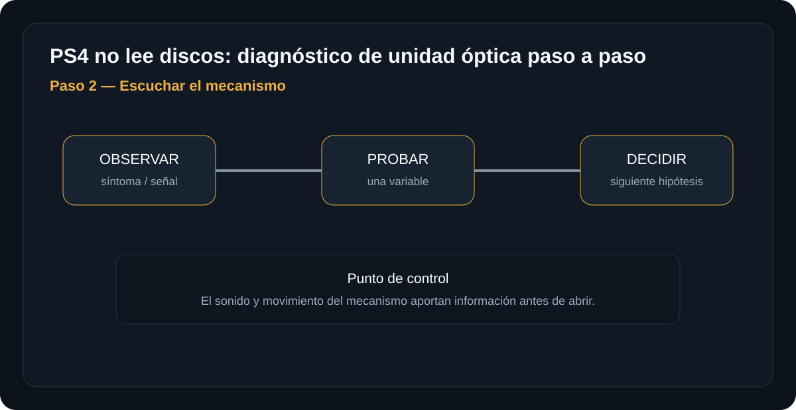
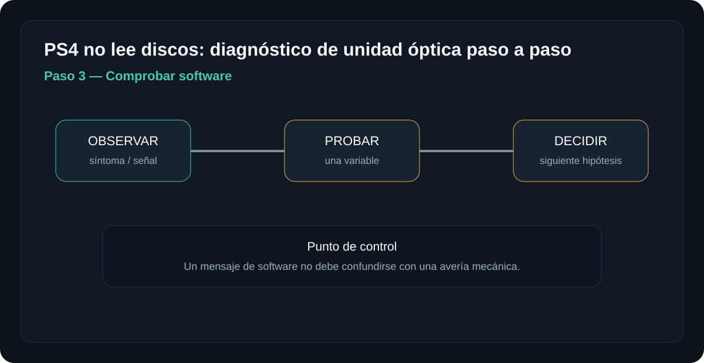
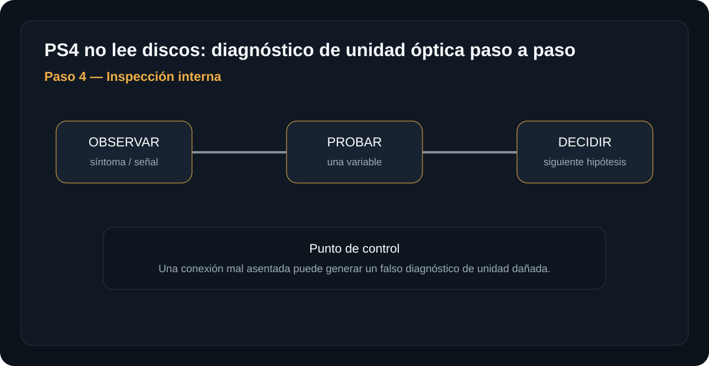
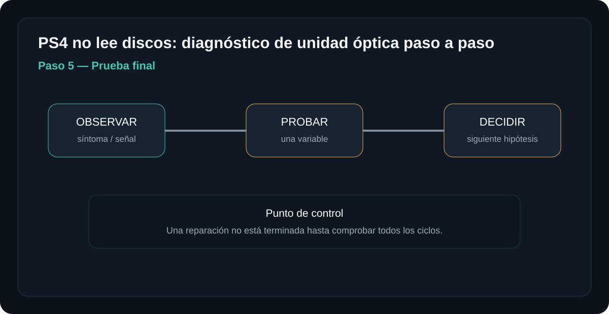

Introducción

La meta es llegar a una hipótesis con evidencia. No se trata de desmontar por desmontar: cada paso elimina una causa posible y prepara el siguiente.
Antes de empezar: seguridad
Retira alimentación y periféricos antes de abrir. No trabajes con una fuente de red abierta ni realices mediciones energizadas si no tienes formación e instrumental apropiados.
- Trabaja sobre una superficie limpia, seca y bien iluminada.
- Organiza tornillos y conectores por etapa.
- Fotografía conexiones antes de desconectarlas cuando desmontes.
- No fuerces una cubierta: una resistencia inesperada suele indicar una fijación pendiente.
Herramientas y material
Diagnóstico paso a paso
Descartar el disco
Prueba un disco de juego y otro disco compatible que sepas que funciona. Inspecciona suciedad o daños importantes.

Qué hacer
- Prueba con un disco distinto que sepas con certeza que funciona en otra consola, para descartar que el disco original esté dañado.
- Inspecciona la cara reflectante bajo buena luz: rayones circulares finos suelen ser normales, pero rayones profundos, radiales o grietas sí impiden la lectura.
- Limpia el disco con microfibra en línea recta desde el centro hacia el borde (nunca en círculos), nunca con alcohol fuerte ni abrasivos.
Si solo falla un disco específico, el lector puede no ser la causa: prueba al menos 2-3 discos distintos antes de sospechar de la unidad óptica.
Resultado esperadoSolo un disco falla y los demás leen bien → el disco está dañado. Varios discos distintos fallan igual → continúa al paso 2.
Escuchar el mecanismo
Introduce el disco y observa si el mecanismo intenta cargarlo, lo expulsa o no reacciona. No fuerces la entrada.

Qué hacer
- Introduce un disco y escucha: un zumbido corto y silencio (no gira), un zumbido que sube y baja de tono (intenta leer y falla) y silencio total (no toma el disco) son señales distintas.
- Observa si el disco se expulsa solo tras unos segundos: expulsión rápida y consistente sugiere error de lectura; ausencia total de carga o expulsión sugiere problema mecánico de arrastre.
- No fuerces la entrada empujando el disco si el mecanismo no lo toma solo: puedes desalinear el mecanismo de carga.
El sonido y movimiento del mecanismo aportan información antes de abrir: "no reacciona" (sensor o motor de carga), "gira y falla" (láser lector) y "expulsa de inmediato" (posible error de lectura) son rutas de diagnóstico distintas.
Resultado esperadoNo reacciona → sospecha de sensor o motor de carga (ve al paso 4). Gira pero no lee → sospecha del láser. Expulsa de inmediato con varios discos → continúa al paso 3.
Comprobar software
Si la consola reconoce parcialmente el disco, revisa el mensaje mostrado y el estado del sistema.

Qué hacer
- Anota el mensaje o código de error exacto que muestra la consola, no solo "no lee discos": muchos códigos apuntan a software o base de datos del sistema, no al lector físico.
- Intenta reconstruir la base de datos del sistema desde el Modo Seguro (opción 5), lo que no borra juegos ni partidas, solo reindexa el contenido.
- Revisa si el disco aparece listado en Configuración > Almacenamiento aunque no cargue: si el sistema lo "ve" pero no lo inicia, es más probable software que lector físico.
Un mensaje de software no debe confundirse con una avería mecánica: reconstruir la base de datos es de bajo riesgo y debe intentarse antes de desmontar nada.
Resultado esperadoCarga mejor o funciona tras reconstruir la base de datos → era software, resuelto. Sigue sin reconocer discos → continúa al paso 4.
Inspección interna
Si se desmonta, documenta posición de cables y piezas. La unidad óptica contiene partes móviles delicadas.

Qué hacer
- Con la consola apagada y desconectada, retira la tapa siguiendo el manual del modelo exacto (original, Slim y Pro tienen unidades y tornillos distintos).
- Fotografía la posición de cada cable interno antes de desconectarlo: los conectores flex de la unidad óptica son frágiles y fáciles de insertar al revés.
- Verifica que el flex y el cable de datos/alimentación de la unidad estén completamente asentados; una conexión floja tras un transporte es causa común de fallas intermitentes.
- Si tienes una unidad idéntica de otra consola del mismo modelo, puedes intercambiarla para aislar si el problema es de la unidad o de la placa.
Una conexión mal asentada puede generar un falso diagnóstico de "unidad dañada" cuando solo era un cable suelto; reasienta siempre las conexiones antes de asumir un reemplazo.
Resultado esperadoReasentar cables resuelve el problema → era una conexión floja. Persiste con todo bien asentado → la unidad óptica (láser o motor) probablemente necesita reemplazo.
Prueba final
Después de cualquier intervención, prueba varios discos y verifica inserción, lectura y expulsión.

Qué hacer
- Tras cualquier intervención, prueba con al menos 3 discos distintos, incluyendo uno de juego y uno de película/Blu-ray si el modelo lo soporta.
- Repite el ciclo completo varias veces: insertar, esperar a que cargue el menú, expulsar, volver a insertar; funcionar solo en el primer intento indica un problema no resuelto del todo.
- Deja la consola funcionando con un juego cargado 15-20 minutos para confirmar que no haya errores de lectura intermitentes bajo uso prolongado.
Una reparación no está terminada hasta comprobar todos los ciclos: un solo disco una sola vez no confirma que el problema quedó resuelto de forma consistente.
Resultado esperadoTodos los discos cargan y expulsan bien en varios ciclos → reparación confirmada. Falla intermitente incluso después → revisa de nuevo el paso del síntoma que persiste.
Una prueba negativa no es un fracaso: es información. Registra qué se probó, con qué pieza o condición y qué cambió. Evita reemplazar varios componentes al mismo tiempo.
Tabla rápida de diagnóstico
| Síntoma | Primera comprobación | Siguiente hipótesis |
|---|---|---|
| No acepta disco | Mecanismo no mueve | Prioridad: entrada/sensores |
| Acepta pero no lee | Gira y falla lectura | Prioridad: unidad óptica/lectura |
| Solo falla un disco | Otros funcionan | Prioridad: disco |
Fuentes, licencias y referencias
- Fuente de imagen / referencia — revisa la licencia indicada en la ficha antes de redistribuir.
- Creative Commons BY-SA 4.0 cuando aplique a la imagen.
- iFixit / documentación de reparación como referencia técnica para PlayStation cuando corresponda.